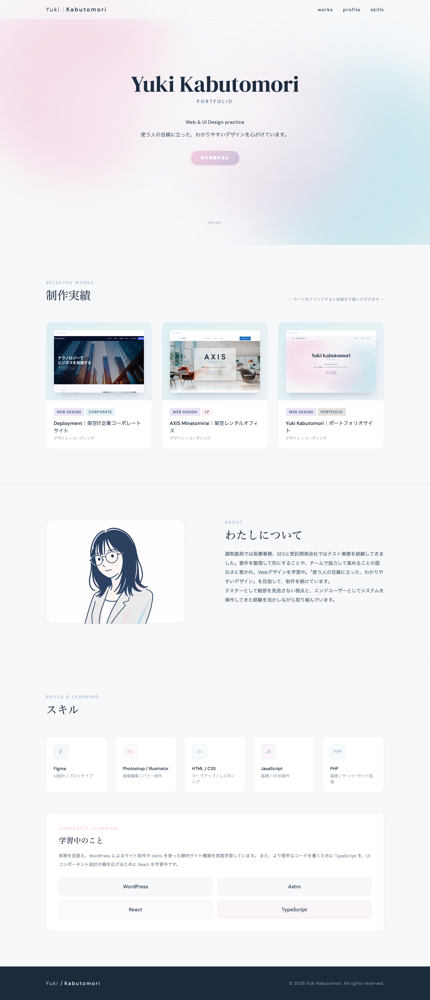


ポートフォリオサイト
HTML / CSS / JS で作成したポートフォリオサイト
https://intp-sun.site/wdex12/kabutomori_portfolio/



- 担当範囲
- デザイン・コーディング
- 使用ツール
- Figma / HTML / CSS / JavaScript
- 制作期間
- 約2週間
- 種別
- ポートフォリオサイト
01 目的と課題
自身の制作実績を伝えるポートフォリオサイトとして制作しました。採用担当者や案件の発注者を想定ターゲットとし、作品の概要をひと目で把握できる構成と、詳細ページへの自然な導線を意識しました。
02 工夫したこと
-
MVのオーロラ＋光の粒アニメーション
CSSアニメーションで3層のオーロラを表現し、JSで光の粒を動的生成。ファーストビューで印象を残す演出にしました。 -
`prefers-reduced-motion`対応
モーション軽減設定が有効な場合はパーティクルの生成を止め、CSSアニメーションも静止。アクセシビリティに配慮しました。 -
CSSだけでデバイス枠を再現
ブラウザ枠・スマホ枠をCSSのみで実装し、作品カードと詳細ページのスクリーンショットにリアリティを持たせました。